A 65B model on one 48 GB GPU
In 2023, a team at the University of Washington published QLoRA. They fine-tuned a 65-billion-parameter (65B) model on a single GPU with 48 GB of memory, and reported that the method preserved the task performance of 16-bit full fine-tuning. Their Guanaco model, trained this way for 24 hours on one GPU, reached 99.3% of ChatGPT's performance on the Vicuna benchmark.
For comparison, full fine-tuning in the usual way needs roughly 16 bytes of GPU memory per parameter, about 1 TB for a 65B model, before counting activations. This is an order-of-magnitude estimate from byte counts.
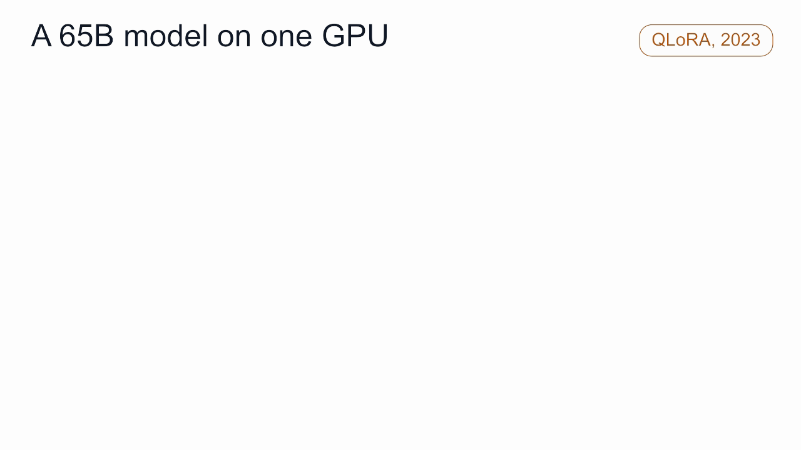
QLoRA combines two parts: LoRA reduces the number of parameters that are trained, and 4-bit quantization reduces the number of bits each parameter takes. Three basic concepts explain both: rank, low-rank approximation and quantization. One idea connects them all: the pattern in a matrix.
This is the third article in our post-training series. The previous one covered instruction tuning; this one is about making fine-tuning fit in memory.
The memory cost of full fine-tuning
Full fine-tuning updates every parameter of the model. During training, GPU memory holds the parameters, a gradient for each parameter, and two Adam optimizer states for each parameter. In 32-bit floats that is about 16 bytes per parameter: more than 100 GB for a 7B model and about 1 TB for a 65B model. Activations from the forward pass come on top.
There are two ways to reduce this. Train fewer parameters, which is what LoRA does, or store each parameter in fewer bits, which is what quantization does.
A pattern: one column times one row
The central concept of this article is the pattern. A pattern is the matrix you get by multiplying a column vector by a row vector, also called a rank-1 matrix. Each entry is the product of one column entry and one row entry, so every row is the same row vector scaled by a different amount.
Take a sales table. Three stores report sales over four days. Every store follows the same daily rhythm, [1, 2, 2, 1], and only the store size differs: 10, 20 and 30. The whole 3×4 table is the column [10, 20, 30] times the row [1, 2, 2, 1]. Its 12 numbers are determined by 3 + 4 = 7 numbers, and its rank is 1.
Now add a promotion: days 3 and 4 get an extra [0, 0, 5, 5], with participation [1, 0, 2] across the three stores. The new table is the sum of two patterns. Its rows are no longer multiples of one row vector, and its rank is 2.
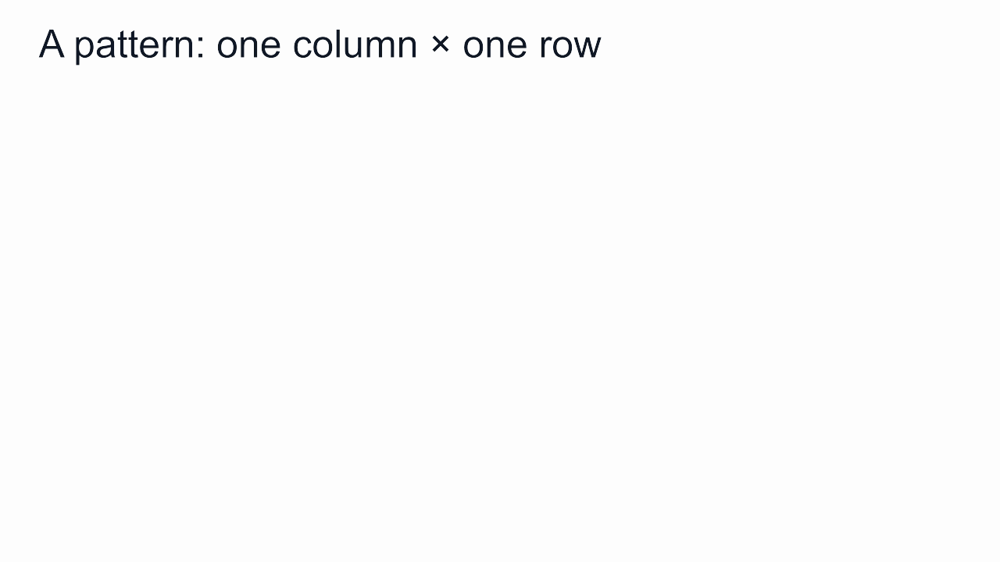
A matrix is a sum of patterns, and its rank is the number of independent patterns in it.
As a computation, a pattern u vᵀ applied to an input x first measures how much x points along direction v, then writes that amount along direction u. One pattern reads one input direction and writes one output direction; a rank-r matrix contains r such read-write pairs.
Approximation: keep the strongest patterns
Real matrices are made of many patterns of different strengths. Singular value decomposition (SVD) splits any matrix into a sum of patterns, ordered from strongest to weakest, with no overlap between them. Keeping only the strongest r patterns gives the smallest possible error among all rank-r matrices.
Take a grayscale photo. With 1 pattern, you get a grid of horizontal and vertical bands. With 20, the face is recognizable. With 50, it is close to the original. A few strong patterns carry the overall structure, and many weak ones add detail.
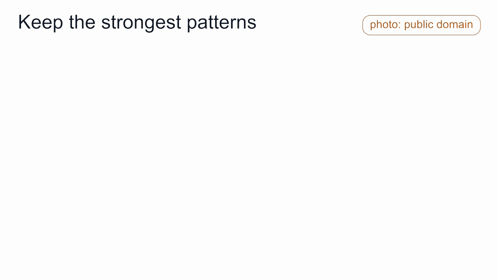
A low-rank approximation represents a large matrix with only r patterns, written as a tall, thin matrix times a short, wide one. A d×d matrix holds d² numbers; at rank r it needs only 2dr. With d = 4096 and r = 8, that is 65,536 numbers instead of about 16.8 million, roughly 0.4%.
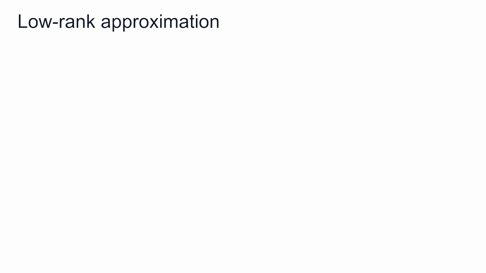
LoRA: add a few patterns to frozen weights
LoRA (Low-Rank Adaptation) keeps the original weight W unchanged and frozen, and adds an update made of r patterns next to it:
W′ = W + B·A, where B is a d×r matrix and A is an r×d matrix
B·A is exactly a sum of r patterns: column i of B times row i of A. Training updates only A and B; W never changes.
Why not apply a low-rank approximation to W itself? A pretrained weight matrix spreads its strength across hundreds of patterns, so keeping only a few loses most of the information. LoRA's premise is that adapting to a new task changes the weights mostly along a few patterns. The LoRA paper studies the low rank of these updates empirically and supports this premise.
LoRA keeps every pattern of the original weights and learns a few new ones, added on top of the frozen weights.
Training starts with B = 0 and A random. Then B·A = 0, and the model's output is exactly that of the original model. Because A is not zero, B receives a gradient in the first step, and training proceeds. Gradient descent searches for the r read-write pairs that lower the task loss.
After training, B·A has the same shape as W, so it can be added into W with no extra cost at inference. Alternatively, different A and B can be kept for different tasks and swapped as needed. The LoRA paper reports that, on GPT-3 175B, it reduces trainable parameters by about 10,000 times and GPU memory needs by about 3 times compared with full fine-tuning with Adam.
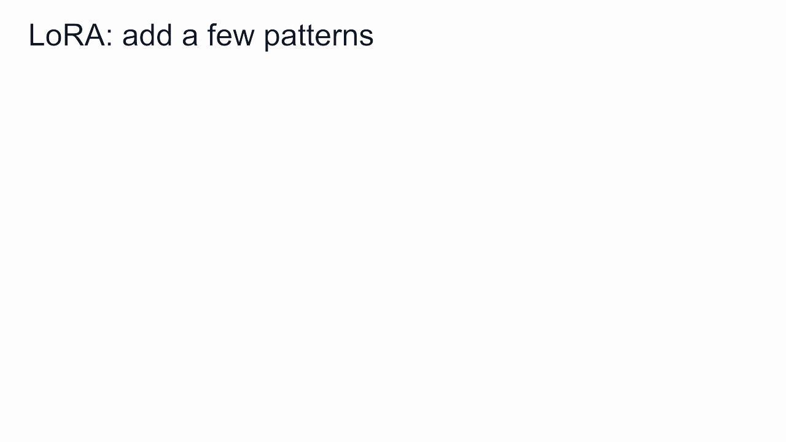
LoRA has limits. The rank r bounds what the update can express: a change that needs more than r patterns can't be learned completely. And LoRA reduces only the training state; the original weights still sit in GPU memory at 16 bits. For a 65B model, the weights alone take about 130 GB.
Quantization: store each number in fewer bits
Quantization reduces the number of bits per number; the number of numbers stays the same.
Bits and values. A b-bit number can take 2ᵇ values. bf16 uses 16 bits and has 65,536 possible values; 4 bits give only 16. In 4-bit quantization, each weight is mapped to one of 16 preset levels, and only the level's index, 0 to 15, is stored.
Block-wise scaling. The 16 levels lie between −1 and 1, while real weights are small, often within about ±0.05. So the weights are split into blocks of 64, and each block stores one scale: the largest absolute weight in the block. To store a weight, divide it by the scale, find the nearest level and keep its index. To use it, multiply the level by the scale. With blocks, an unusually large weight affects only its own block.
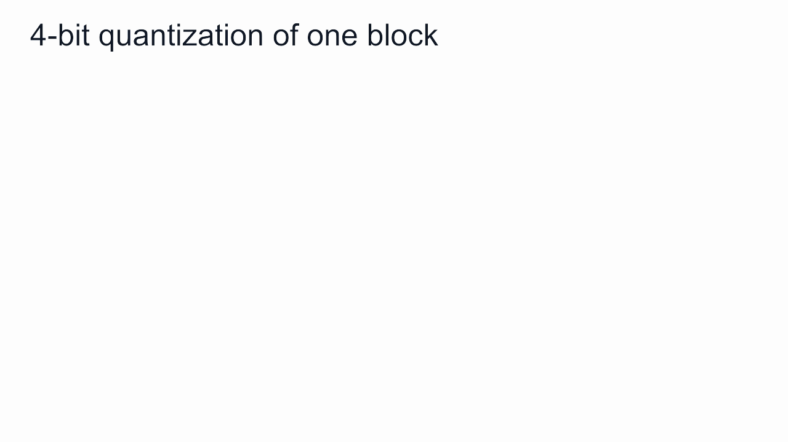
NF4. QLoRA uses a 4-bit format called NF4 (4-bit NormalFloat). Trained weights are roughly bell-shaped, so NF4 places its 16 levels at quantiles of the normal distribution: dense near 0, sparse in the tails, with an exact 0. Most weights sit near 0, so their rounding error is smaller.
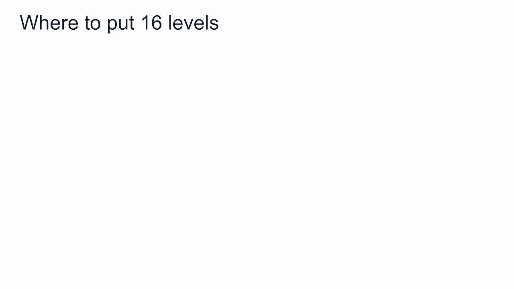
Storage and compute. Each weight takes 4 bits, plus a share of the scale used by its block of 64. Quantizing the scales themselves to 8 bits, called double quantization, brings the average to about 4.13 bits per weight, roughly a quarter of bf16. At compute time, each block is converted back to bf16 just before its matrix multiplication and discarded afterward: storage is 4-bit, computation is still 16-bit.
Comparing low rank and quantization through patterns
Both low-rank approximation and quantization introduce error, but the error has different structure:
- Low-rank approximation removes the weaker patterns. The patterns it keeps are exact.
- Quantization keeps every pattern, changes each pattern's strength only slightly, and adds a small error spread across all directions, close to random noise.
Low-rank approximation reduces the number of patterns in a matrix; quantization reduces the bits per number.
This explains an apparent contradiction. Pretrained weights are hard to compress with low rank, because they contain many patterns and dropping the weak ones loses much information. They can still be quantized well, because all patterns are kept and only a little noise is added.
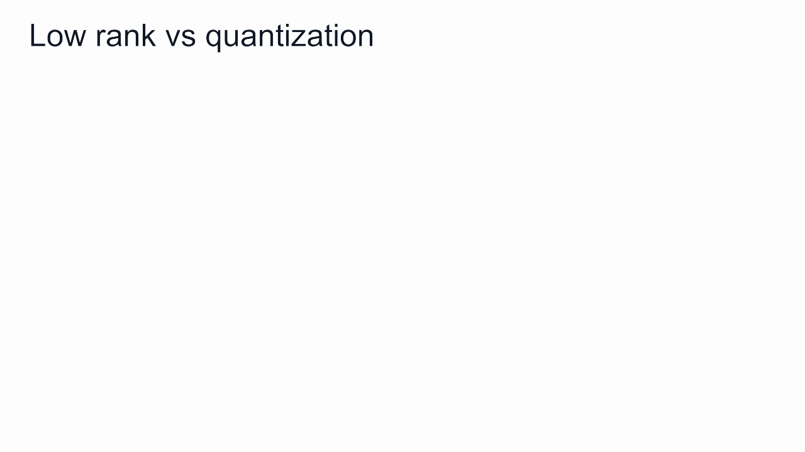
QLoRA: low rank and quantization where each fits
QLoRA combines the two:
- The frozen original weights W are stored in 4-bit NF4 and never updated. They keep all their patterns at lower precision.
- LoRA's A and B are stored in 16 bits and trained, learning a few new patterns.
- In the forward pass, each block of W is converted to bf16, multiplied with the input, and the LoRA branch's output is added. In the backward pass, gradients flow through the converted W into A and B; W itself doesn't change.
- Paged optimizers move optimizer state to CPU memory during memory spikes, so training doesn't run out of GPU memory.
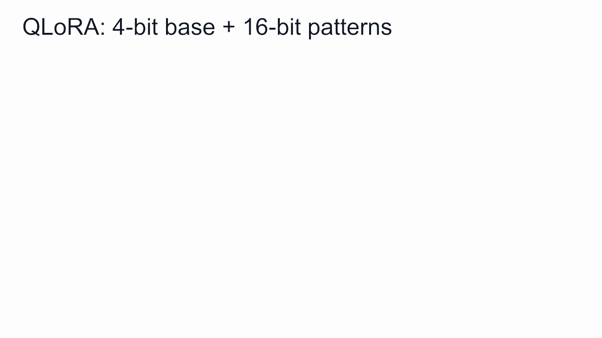
A rough byte-count estimate for a 7B model, counting weights, gradients and optimizer state but not activations: about 100 GB for full fine-tuning, about 15 GB for LoRA and about 5 GB for QLoRA.
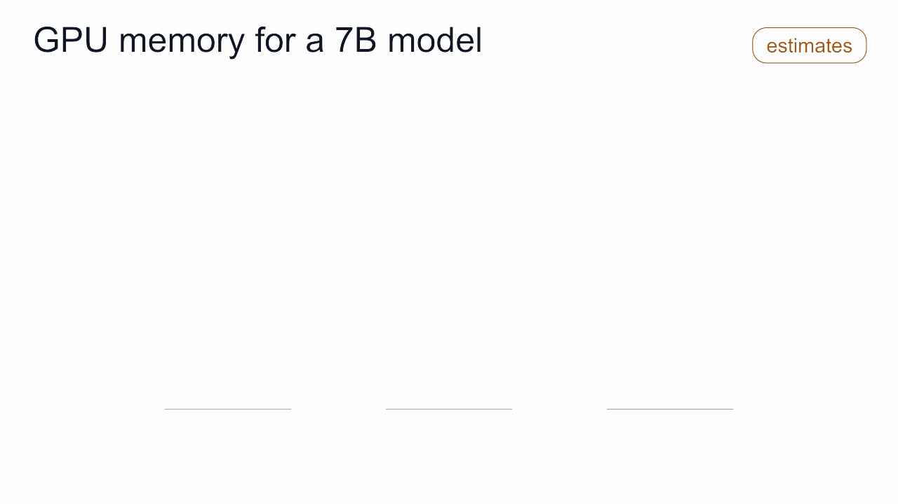
The costs of QLoRA: converting weights before every computation makes training slower than 16-bit LoRA; quantization adds a little error, so the quantized model starts slightly worse and LoRA must make up for it during training; and the trained A and B can't simply be added into 4-bit weights, so they are merged into a 16-bit copy or kept separate.
Summary
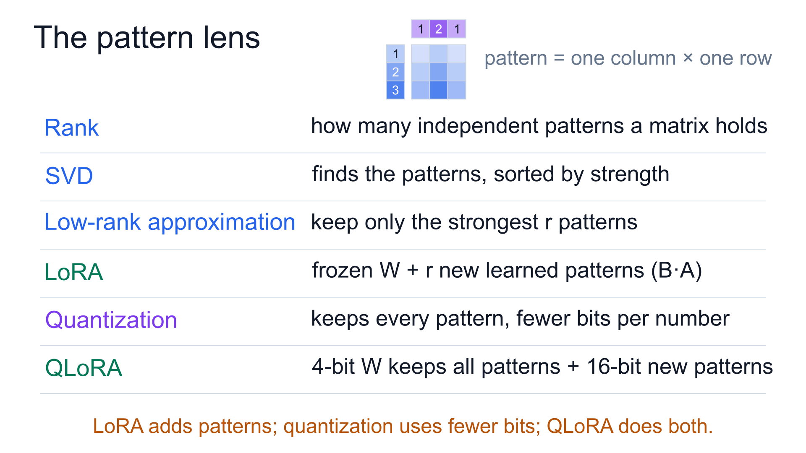
- A pattern is a column times a row. A matrix is a sum of patterns, and its rank is the number of independent patterns.
- SVD finds a matrix's patterns by strength; keeping the strongest r gives the best low-rank approximation.
- LoRA freezes the original weights and trains only r new patterns, B·A, on the premise that adapting to a task needs only a few patterns.
- Quantization keeps every pattern and stores each number in fewer bits: block-wise scales, NF4 levels, and 16-bit computation.
- QLoRA stores the frozen weights in 4 bits and trains LoRA's patterns in 16 bits, so a single GPU can fine-tune a very large model.
Next: preference alignment, and how a model learns from comparisons between answers.